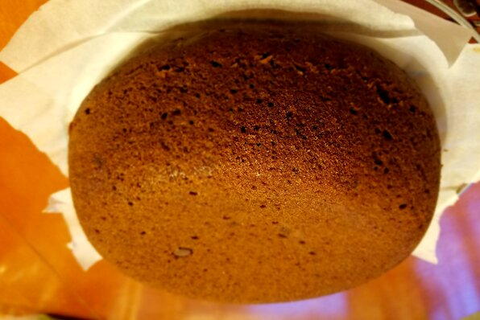

Chocolate yogurt cake

Description
This is a great chocolate cake made with yogurt.
Ingredients
- ½ cup vanilla yogurt
- 1 cup white sugar
- ½ cup vegetable oil
- 3 eggs
- 1 teaspoon vanilla extract
- 2 cups cake flour
- 2 teaspoons baking powder
- 4 (1 ounce) squares unsweetened chocolate, melted
- 3 fluid ounces sweetened condensed milk
- 3 tablespoons milk
Steps
Cake
- Preheat oven to 325 degrees F (165 degrees C).
- Grease and flour a 9 inch square pan.
- Sift together the flour and baking powder. Set aside.
- In a large bowl combine together yogurt, sugar, eggs, oil and vanilla. Beat on medium speed for 2 minutes.
- Beat in flour mixture until smooth.
- Pour batter into prepared pan. Bake in the preheated oven for 45 minutes, or until a toothpick inserted into the center of the cake comes out clean.
Frosting:
- In a medium bowl combine the melted chocolate and sweetened condensed milk. Beat for 2 minutes.
- Pour in 3 tablespoons milk and beat until creamy.
- Frost cake while the frosting is still warm.